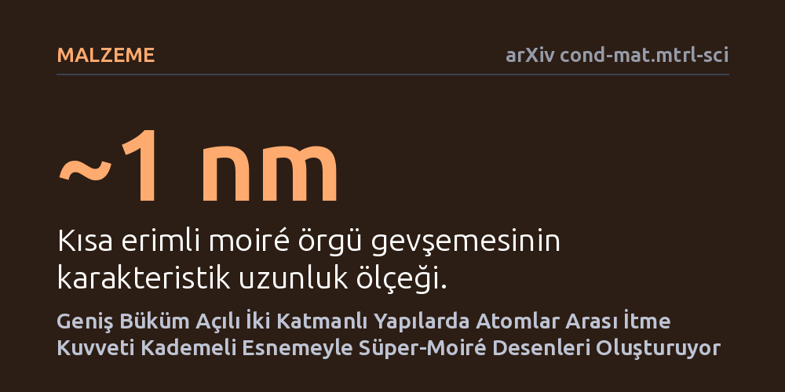

MALZEME · arXiv cond-mat.mtrl-sci · 2026-10-10
Araştırmacılar, geniş açıyla döndürülmüş iki katmanlı malzemelerde süper-moiré desenlerinin mikroskobik düzeyde nasıl oluştuğunu inceledi. Simülasyon ve yüksek çözünürlüklü elektron mikroskopisiyle yapılan çalışma, pikometre ölçeğindeki atomik itme kuvvetinin örgüyü kademeli esneterek bu desenleri yarattığını ortaya koydu.
Geniş açıyla bükülmüş katmanlarda daha önce önemsiz sanılan pikometre ölçeğindeki atomik esnemelerin, malzemenin kuantum ve elektronik davranışlarını doğrudan şekillendirdiğini gösteriyor.

İki boyutlu malzemeleri üst üste yerleştirip birbirine göre hafifçe döndürdüğünüzde, atomik dizilimlerin periyodik olarak çakışması sonucu "moiré" adı verilen görsel girişim desenleri ortaya çıkar. Son dönemde yapılan deneyler, katmanlar arasındaki dönme açısı büyüdüğünde bu desenlerin içinde kendiliğinden çok daha geniş ölçekli ikinci bir düzenin, yani "süper-moiré" yapılarının belirdiğini gösterdi. Ancak bu karmaşık desenlerin atomik seviyede hangi fiziksel mekanizmayla tetiklendiği uzun süredir aydınlatılamamıştı.
Malzeme biliminde bu desenler yalnızca geometrik bir merak konusu değildir; elektronların malzeme içindeki hareketini, enerji seviyelerini ve elektriksel iletkenliği doğrudan belirler. Bilim insanları uzun süre geniş açılı bükümlerde atomların neredeyse hiç esnemeden sabit kaldığını varsayıyordu. Bu varsayımın sorgulanması, yeni nesil kuantum malzemelerin elektriksel davranışlarını doğru tahmin edebilmek açısından kritik bir ihtiyaç yarattı.
Araştırmacılar, yapının derinliklerinde neler olduğunu çözebilmek için teorik modelleme ile ileri düzey deneysel görüntülemeyi birleştirdi. İlk aşamada, atomlar arasındaki itme ve çekme kuvvetlerini hesaba katan kuvvet alanı (force-field) simülasyonları kuruldu. Bu simülasyonlar, katmanlar geniş açıyla üst üste bindiğinde atomik kafesin nasıl gerildiğini ve gevşediğini sayısal olarak ortaya koydu.
Teorik öngörüleri test etmek için "katman ayrımlı çok dilimli elektron pitiyografisi" adı verilen yüksek çözünürlüklü elektron mikroskopisi tekniği kullanıldı. Bu yöntem, her bir atom katmanını ayrı ayrı inceleyerek atomların konumlarındaki pikometre düzeyindeki küçücük kaymaları doğrudan ölçmeyi başardı. Böylece bilgisayar modellemeleri deneysel kanıtlarla birebir doğrulandı.
Elde edilen bulgular, süper-moiré düzeninin temel itici gücünün pikometre (metrenin trilyonda biri) ölçeğindeki atomik etkileşimler olduğunu gösterdi. İki katman arasındaki selenyum atomlarının birbirini itmesi, atom örgüsünün kademeli bir esneme ve gevşeme sürecine girmesine yol açıyor.
Bu esneme tek bir boyutta kalmıyor; iki farklı ölçek birbirine bağlı olarak eşzamanlı ortaya çıkıyor: Yaklaşık 1 nanometre ölçeğindeki kısa erimli moiré gevşemesi ile yaklaşık 10 nanometre ölçeğindeki uzun erimli süper-moiré dalgalanması bir arada var oluyor. Bir başka deyişle, pikometre ölçeğindeki minik bir itme kuvveti, kendisinden binlerce kat büyük olan 10 nanometrelik geniş bir üst yapıyı organize ediyor.
Bu çalışma, geniş büküm açısına sahip sistemlerde atomik örgünün esnemediği yönündeki yaygın kabulleri çürütüyor. Geniş açılarda bile atomların konum değiştirdiği ve bu küçük kaymaların malzemenin genel yapısını kökten değiştirebildiği kanıtlanmış oldu.
İki boyutlu malzemeleri üst üste bükerek yeni elektronik ve kuantum cihazlar geliştirmek isteyen araştırmacılar, artık modellerinde pikometre ölçeğindeki bu kademeli esnemeyi hesaba katmak zorunda. Atomik esnemeyi göz ardı eden yaklaşımlar, bu malzemelerin sergilediği şaşırtıcı kuantum olgularını eksik veya yanlış yorumlama riski taşıyor.